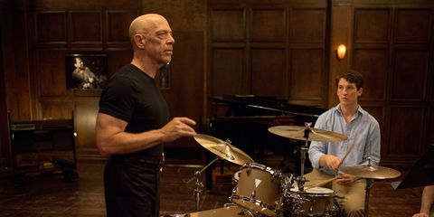

Informació
En Damien Chazelle és un guionista i director de cinema. En el qual ha guanyat alguns premis entre els quals l'oscar a millor directos i el premi del Globus d'or al millor director per la pel·l
Informació
En Damien Chazelle és un guionista i director de cinema. En el qual ha guanyat alguns premis entre els quals l'oscar a millor directos i el premi del Globus d'or al millor director per la pel·lícula La La Land.
Biografía Resumida
Ell n'és fill d'un científic i una professora poc reconeguts però de bona vida, i graciès a aixó va poder estudiar a Hardvard ja que ell de petit s'interessava per la música i també el cinema. Com amb ell ja tenia un gust per el jazz en el 2009 va dirigir i escriure el guió d'una pel·licula independent i en blanc i negre anomenada Guy and Maeline on a Park Bench.
Al 2013 va fer un curtmetratge anomenat Whilplash, que va sobre un bateria de jazz, i com aquesta pel·licula va suposar un gran èxit doncs gràcies a la recaudació del mateix va poder fer-la com un llargmetratge un any més tard.